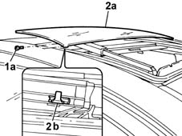

7030B18 sliding roof glass - r+r
- Path
- Procedures > 70 FITTINGS > 7030 SUN ROOF AND HOOD > 7030B sliding roof > 7030B18 sliding roof glass - r+r
- Kind
- repair procedure (removal / refitting; the operation number is the code)
- Applies to
- all engines; all production periods
- Interactive page
- https://sloeber94.github.io/elrnDB-lYpsln/en/#/2429553
Applies to: all engines; all production periods
 Removing
Removing
 Refitting
RefittingOpen the sun roof fully.
1. Undo the bolts fixing the glass panel to the guides.
2. Remove the sun roof glass panel (2a) from the guides together with the stop device (2b).

Applies to: all engines; all production periods
Refitting
RemovingPlace the sun roof glass panel in position together with the stop device.
Tighten the bolts fixing the glass panel to the guides.
Carry out several opening and closing cycles to check that the sun roof glass panel is correctly aligned.